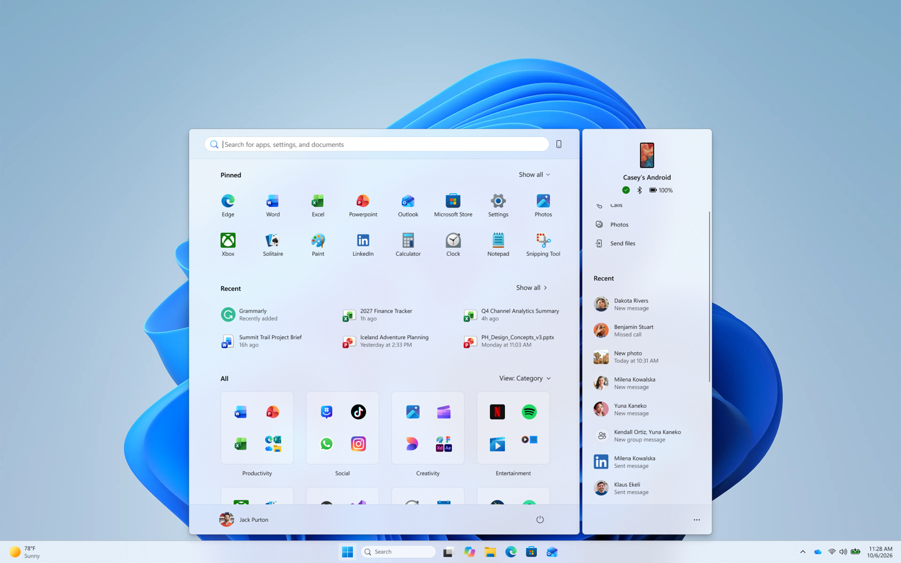
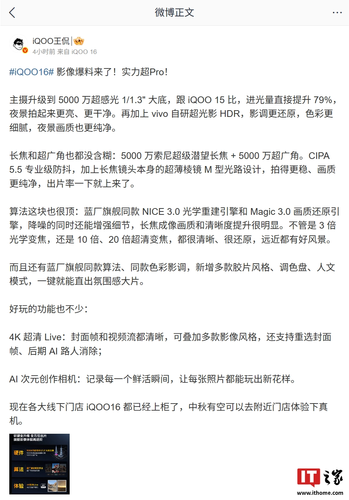
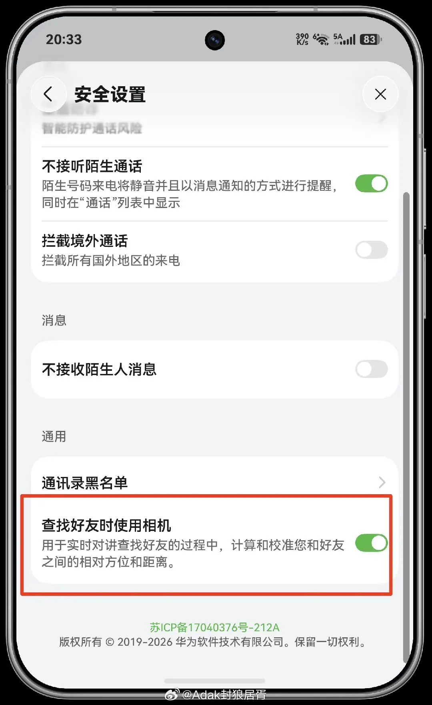
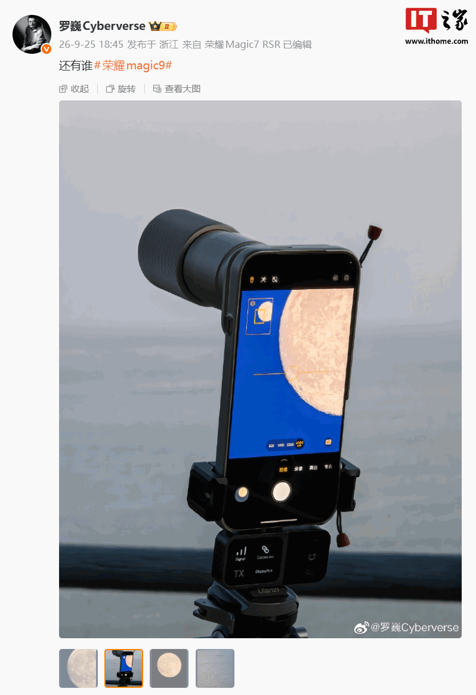
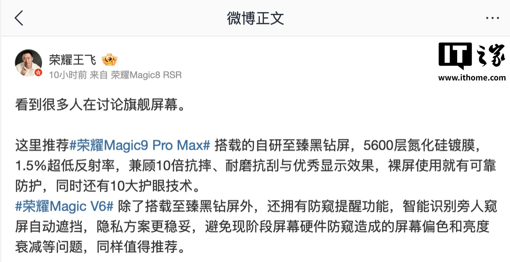
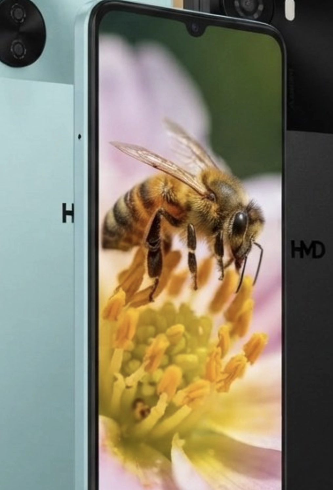
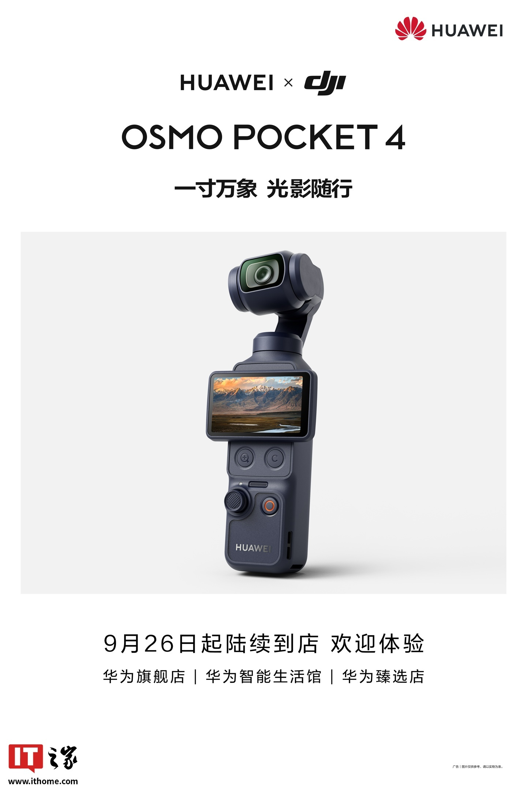
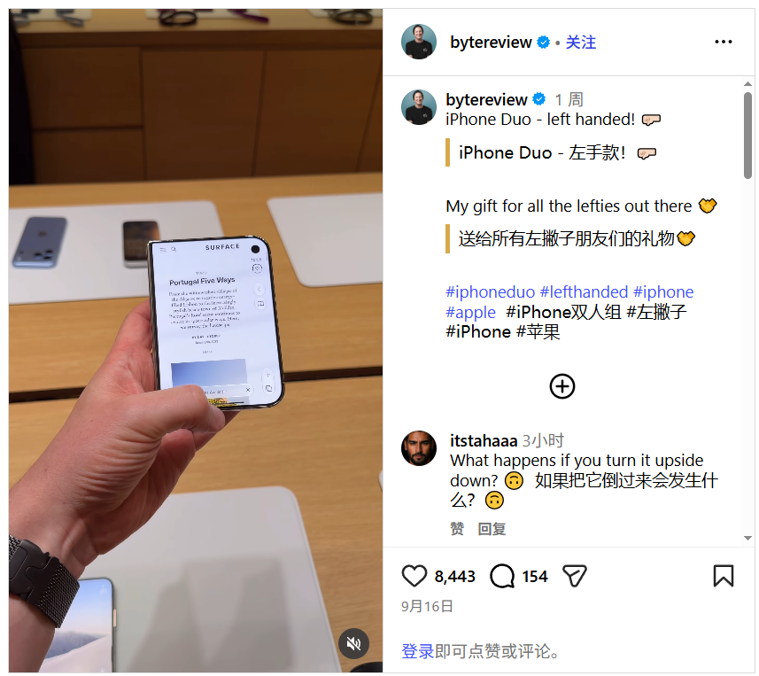
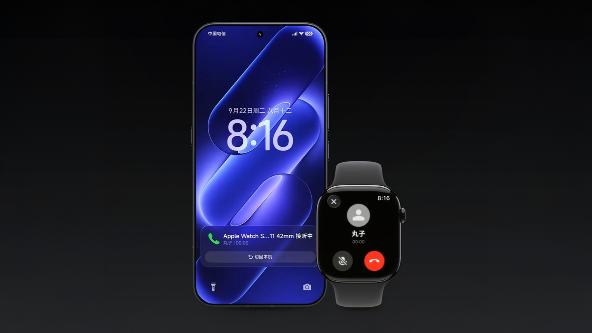
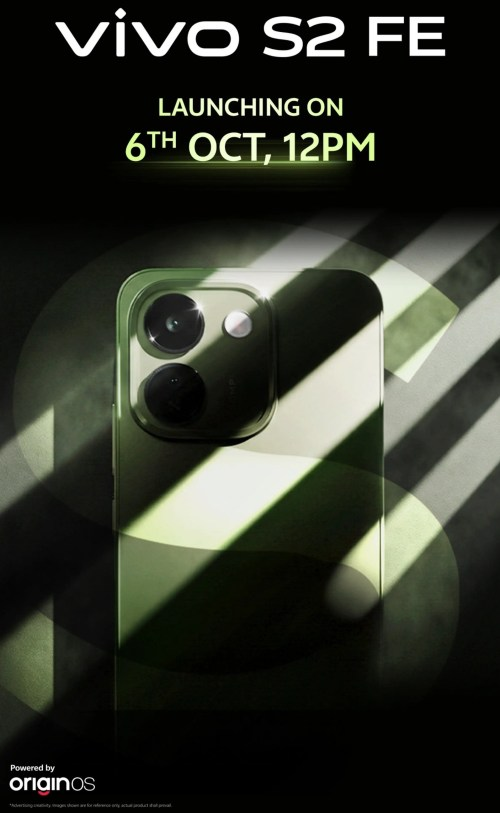

THE TECH EDIT
기술의 변화, 매일 한눈에.
카메라 · 스마트폰 · AI, 해외 테크 소식을 모아 전합니다.
최근 발행2026-09-27
새로 들어온 소식
LATEST STORIES최신 뉴스
전체 3,312개 기사
OPPO Find X10 시리즈, 첫 판매일 플래그십 스마트폰 시리즈 대비 판매량 40% 육박, 전체 시리즈 16GB 램 비중 60% 초과

OPPO Find X10 Pro Max 스마트폰 사용 후기: 2억 화소 렌즈 3개, 그야말로 압도적
니콘, 15가지 장면 모드 및 4K 60fps 영상 촬영 가능한 Z5IIC 풀프레임 카메라 출시

Microsoft, Windows 11 베타/실험 채널 여러 미리 보기 버전 출시: 시작 메뉴 및 휴대폰 도우미 최적화, 에너지 권장 사항 추가

iQOO 16 신형 스마트폰 카메라 사양 추가 유출: 5천만 화소 Sony 슈퍼 페리스코프 망원 + 5천만 화소 초광각, CIPA 5.5 전문가급 손떨림 보정
Huawei 허강, 스마트폰 사업 전환 비하인드 스토리 공개: 위청둥의 전화 한 통으로 무선 글로벌 영업 담당에서 스마트폰 사업으로 전환

Huawei Mate XT 2, Pura X View 스마트폰, StarLight에 친구 찾기 기능 추가 예정, 더 많은 모델 순차적으로 지원

Huawei 로고가 DJI 짐벌 카메라에: HUAWEI × DJI Osmo Pocket 4, 9월 26일부터 매장 출시 공식 발표

뤄웨이, Honor Magic9 Pro Max 스마트폰 망원 렌즈로 촬영한 추석 보름달 샘플 사진 공개하며 "누가 또 있나" 외쳐

Honor Magic9 Pro Max 스마트폰, 자체 개발한 지진 블랙 다이아몬드 스크린 탑재: 반사율 1.5%, 최대 밝기 10,000니트

HMD Aura 2 Pro 스마트폰 공개: Helio G81 프로세서, 4GB RAM 탑재
드론 시스템 프로젝트, 세계 기능 대회에 첫 등장: 참가자는 조립, 프로그래밍 등 여러 관문을 통과해야

이소룡: Huawei-DJI 협업 Osmo Pocket 4 짐벌 카메라에 더 많은 협업 기능 탑재
Apple, TestFlight 앱에 가로 모드 지원 추가… 첫 폴더블 디스플레이 스마트폰 iPhone Duo 출시 준비
Apple 리테일 총괄 디자이너 존슨: Apple Store는 구식화되지 않았으며, iPhone Duo 등은 여전히 "직접 만져보고 현장에서 체험"해야 합니다.

Apple 최초의 폴더블 iPhone Duo, 왼손 조작 영상 유출, 조작자 "경험 나쁘지 않다" 언급
메이퇀, 1.6조 파라미터 LongCat-2.5-Preview 모델 출시: AI 장거리 작업 및 멀티모달 기능 주력
샤오미 18 프로 맥스, Giztop에서 구매 가능: 2억 화소 듀얼 카메라, 8500mAh 배터리

샤오미 18 Pro, 이제 애플 워치 연결 지원으로 아이폰-샤오미 조합 사용성 향상

vivo Y600i 스마트폰 출시: 스냅드래곤 4 2세대, 8000mAh 배터리, 1699위안부터

비보 S2 FE 출시일 드디어 공개, 인도에 비보 최초 10,000mAh 배터리 스마트폰 출시 예정
검색 결과가 없습니다
다른 검색어를 입력하거나 필터를 초기화해 보세요.